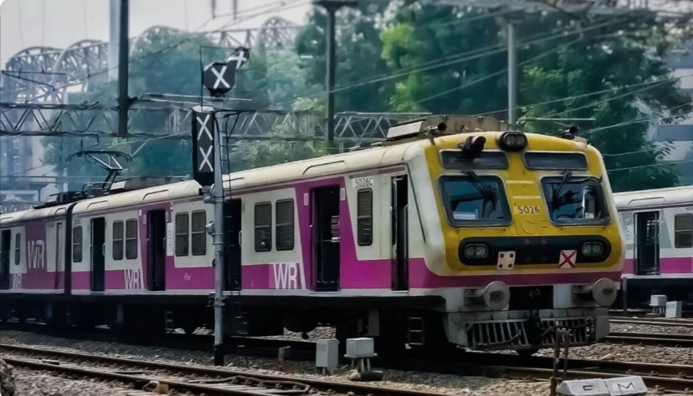
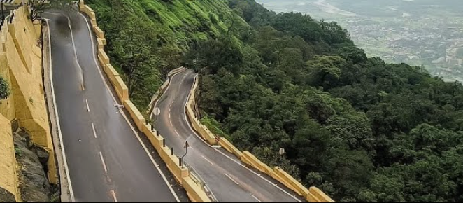
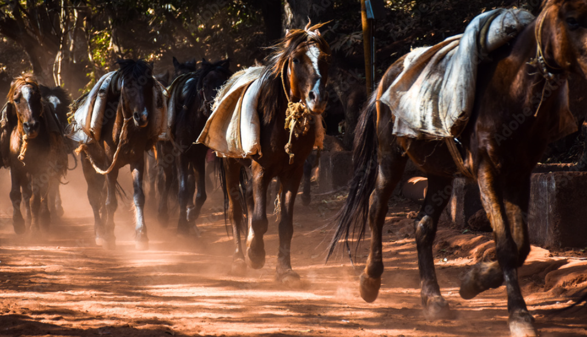

How to Reach Matheran
Planning a trip to the charming, vehicle-free hill station of Matheran?
Here’s everything you need to know about reaching this serene destination from Mumbai and Pune, along with local transport options to help you navigate easily.

From Mumbai to Matheran
- By Train: Take a Central Line train to Neral Station. From there, you can continue your journey via toy train, share taxi, or other local options.
- By Road: Drive or hire a cab straight to Dasturi Naka (Matheran Car Parking) — this is the last point where vehicles are allowed.
From Pune to Matheran
- By Train: Take a train to Karjat, then switch to a local train for Neral Station.
- By Road: Travel via the Mumbai-Pune Expressway to Matheran Car Parking (Dasturi Naka)

From Neral to Matheran
- Share Taxi: Fare - ₹100 per seat
- Toy Train (Neral to Matheran): Fare - ₹95 per seat

From Matheran Car Parking (Dasturi Naka) to Matheran Town
- E-Rickshaw (Newly Introduced & Convenient mode of Transport ) Fare - ₹35 per seat (3 people sharing)
- Shuttle Train (Aman Lodge to Matheran Station) Fare - ₹55 per seat
- Horse Ride - A traditional and fun way to reach Matheran town from the car park.
- Trekking Route (For Nature Lovers) Distance - Around 2.5 km